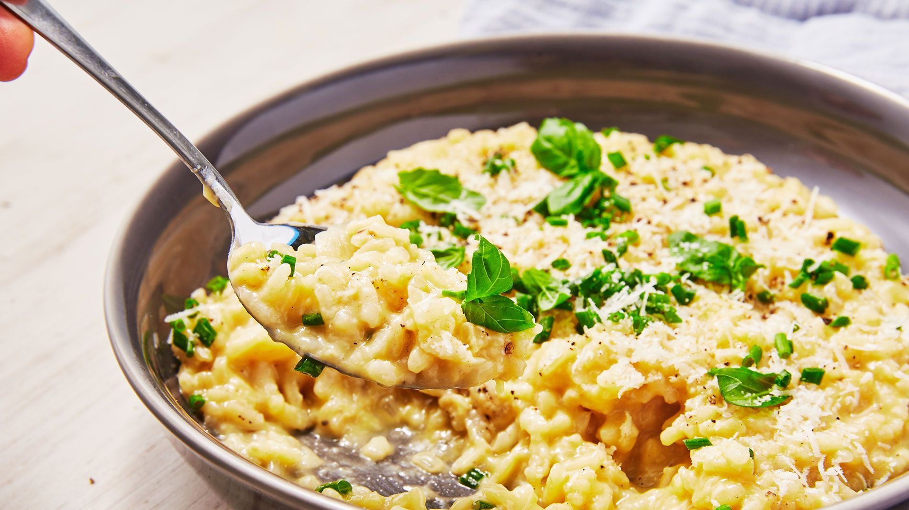

Risotto

Cheesy rice
Ingredients
- 32 oz unsalted chicken stock, warmed
- 1 tbsp unsalted butter
- 1 tbsp olive oil
- 1 cup Arborio rice
- 1/4 teaspoon kosher salt
- 1/4 cup freshly grated Parmgiano-Reggiano cheese
Steps
- Bring stock to a simmer in a saucepan over medium. Reduce heat and keep warm.
- Melt the butter and heat the oil in a large skillet or pot. Add the rice; stir to coat all the grain, 1 minute
- Add 1 ladle of broth (1/2 cup to 3/4 cup), stir, and leave it alone until broth is nearly absorbed, 2 to 3 minutes
- Stir, add another ladle of broth, and continue stirring. Cook undisturbed until the broth is absorbed. 3 minutes. Repeat until about 1 ladle of broth remains
- Add salt, remaining broth, and cheese. Stir gently for about 2 minutes. Serve immediately in warmed bowls with grated cheese over top